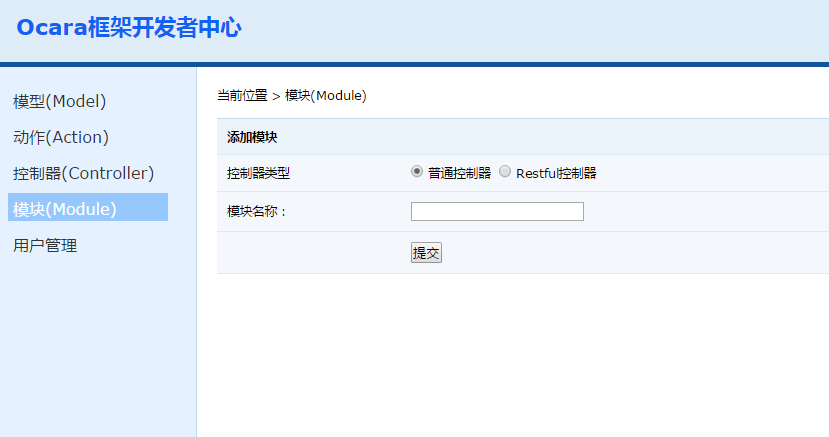

2.2 添加模块（Module）
（1）进入开发者中心，点击左边的"模板（Module）"菜单。右边会出现新建控制器的界面，填写模块名称并提交。  （2）新建成功后，会相应模块目录多出该模块目录。添加选项介绍
模块类型： 参考添加控制器 控制器类型 （1）普通控制器，即同步渲染模板开发模式，由PHP生成模板文件，而不是调用接口方式。 （1）API控制器，即异步开发模式，前端往往是ajax或者调用接口。 （2）Restful控制器，即符合Restful架构的控制器。 模块名称 如：admin。